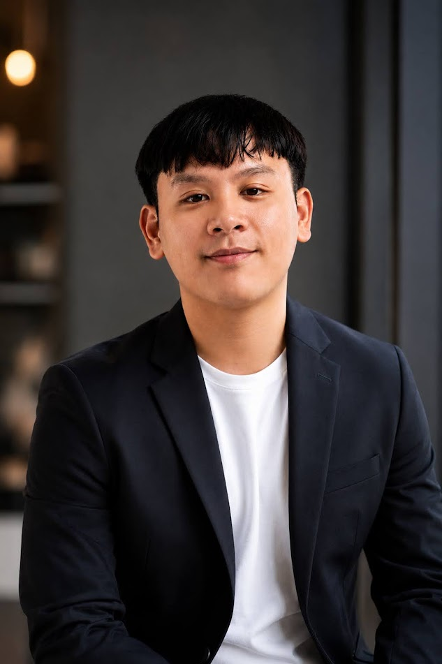

KIERWIN D. RAMOS

● onlineI'm a Systems Engineer currently building and maintaining production software inside a high-volume HDD manufacturing environment at Toshiba Equipment Information (Phils.) Inc. — where downtime is measured in cost, and every script has to earn its place on the line.
My day-to-day spans C#.NET, PHP, Python, and JavaScript for web and desktop tooling, Linux shell automation for system monitoring, and SQL for real-time production reporting. I lean heavily on AI-assisted development workflows — using them to prototype faster, refactor cleaner, and ship business applications without cutting corners on requirements.
Outside the factory floor, I build and ship full-stack web products end-to-end — the three below are live, in production, and used by real businesses today.
Full-stack builds shipped and running in production — built on JavaScript, PHP, and MySQL, from brand storefront to internal finance tooling.
Custom vinyl decal storefront for motors, cars, and helmets — bold stickers and clean finishes made to look instantly sharper. Built as a full brand + e-commerce experience.
Classy custom bag brand for modern women — moss green, terracotta, and graceful everyday luxury, shaped into a full product catalog and storefront.
Personal finance manager for handling income, savings, debt, and budget in one place — built to make everyday money management effortless.
- Engineer and maintain web and desktop applications using C#.NET, PHP, and JavaScript to automate critical HDD manufacturing workflows.
- Develop and deploy Python scripts and Linux shell automation tools to enhance system monitoring and drive production cost reductions.
- Leverage AI-assisted development tools to accelerate development, debugging, code generation, refactoring, and documentation.
- Conduct root-cause analysis and implement fixes for production software, minimizing downtime through expert troubleshooting.
- Manage and optimize SQL databases to ensure high availability and data integrity for real-time production reporting.
- Performed comprehensive testing of products and equipment to verify compliance with safety and performance standards.
- Provided technical infrastructure support and designed professional graphics for the Provincial Government of Laguna.
// education
// awards
- ▸ Kaizen Award — Toshiba, 2025
- ▸ Best Engineer Award — Toshiba
- ▸ Bright Program Award — Toshiba
- ▸ Best in Research Award — LSPU